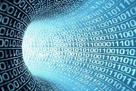

GLI ALGORITMI
Un algoritmo è una sequenza di istruzioni che permette di risolvere un problema o eseguire un compito in modo preciso e ordinato.
In informatica, gli algoritmi sono fondamentali perché dicono al computer esattamente cosa deve fare per ottenere un certo risultato.
Possiamo immaginarli come una ricetta di cucina: se seguiamo tutti i passaggi correttamente, otterremo il piatto desiderato; se sbagliamo qualcosa, il risultato potrebbe non essere quello che vogliamo.
Caratteristiche di un algoritmo
Un buon algoritmo deve avere alcune caratteristiche fondamentali:
-Chiarezza: Deve essere scritto in modo preciso, senza ambiguità. Ogni passaggio deve essere comprensibile e ben definito.
-Finitudine: Deve avere un numero limitato di passi e arrivare a una conclusione in un tempo ragionevole.
-Efficienza: Deve risolvere il problema nel minor tempo possibile e usando meno risorse (come memoria e potenza di calcolo).
-Correttezza: Deve sempre dare il risultato corretto per qualsiasi input valido.
Tipi di algoritmi
Gli algoritmi possono essere di diversi tipi, a seconda di come funzionano:
-Sequenziali: Eseguono le istruzioni una dopo l’altra, in un ordine preciso. Ad esempio, un algoritmo che calcola l’area di un rettangolo leggendo base e altezza e poi moltiplicandoli.
-Condizionali: Contengono delle condizioni (if-else) e possono scegliere percorsi diversi a seconda del valore di certe variabili. Ad esempio, un algoritmo che decide se un numero è pari o dispari controllando il resto della divisione per 2.
-Iterativi: Ripetono certe istruzioni più volte, finché una condizione non viene soddisfatta. Ad esempio, un algoritmo che somma tutti i numeri da 1 a 100 usando un
-Ricorsivi: Un algoritmo è ricorsivo quando chiama sé stesso per risolvere problemi più piccoli dello stesso tipo. Un esempio è l’algoritmo per calcolare il fattoriale di un numero.

Esempi di algoritmi famosi
Nella programmazione e nella matematica, ci sono alcuni algoritmi molto importanti che vengono usati spesso:
-Algoritmo di ordinamento: Usato per riordinare una lista di numeri o parole (es. Bubble Sort, Quick Sort, Merge Sort).
-Algoritmo di ricerca: Usato per trovare un elemento in un insieme di dati (es. Ricerca Lineare, Ricerca Binaria).
-Algoritmi crittografici: Servono a proteggere le informazioni con la codifica dei dati, come quelli usati per le password
.

Come si scrive un algoritmo?
Gli algoritmi possono essere scritti in diversi modi:
-Linguaggio naturale: Descriviamo i passi a parole, come se spiegassimo il procedimento a qualcuno.
-Diagrammi di flusso: Si usano simboli grafici per rappresentare i vari passi e le decisioni.
-Pseudocodice: Si usa un linguaggio semi-formale, simile ai linguaggi di programmazione, per rendere l’algoritmo più vicino al codice vero e proprio.
-Codice in un linguaggio di programmazione: L’algoritmo viene tradotto in un linguaggio come Python, C++ o Java per essere eseguito dal computer.
Perché gli algoritmi sono importanti?
Gli algoritmi sono ovunque nella nostra vita quotidiana:
-Nei motori di ricerca (Google usa algoritmi complessi per trovare le informazioni migliori).
-Nei social network (gli algoritmi decidono quali post mostrarci).
-Nei videogiochi (gestiscono l’intelligenza artificiale dei personaggi).
-Nelle app di navigazione (calcolano il percorso più veloce).
-Nei sistemi di sicurezza informatica (proteggono i dati dagli hacker).
Paragrafo 2
LA PROGRAMMAZIONE
La programmazione è il processo di scrittura di istruzioni che un computer può eseguire per svolgere un determinato compito.
In pratica, è il modo in cui diciamo al computer cosa deve fare, usando un linguaggio che può capire.
Cos’è la programmazione?
Possiamo pensare alla programmazione come a una conversazione tra noi e il computer. Siccome il computer non capisce il linguaggio umano, dobbiamo usare linguaggi specifici chiamati linguaggi di programmazione.
Scrivere un programma significa creare un insieme di istruzioni (cioè un algoritmo tradotto in codice) che il computer eseguirà per ottenere un certo risultato.

Come funziona la programmazione?
La programmazione segue alcuni passaggi fondamentali:
-Definizione del problema – Capire cosa deve fare il programma.
-Progettazione dell’algoritmo – Scrivere i passaggi per risolvere il problema.
-Scrittura del codice – Usare un linguaggio di programmazione per tradurre l’algoritmo in istruzioni che il computer può eseguire.
-Compilazione o interpretazione – Il codice viene trasformato in un linguaggio comprensibile per il computer.
-Esecuzione e test – Si prova il programma per vedere se funziona correttamente.
-Debugging e miglioramenti – Se ci sono errori, si correggono e si migliorano le prestazioni del codice.

Linguaggi di programmazione
Esistono molti linguaggi di programmazione, ognuno con caratteristiche diverse. Alcuni dei più usati sono:
-Python – Facile da imparare, usato per intelligenza artificiale, automazione e sviluppo web.
-C++ – Potente e veloce, usato nei videogiochi e nei programmi che devono essere molto efficienti.
-Java – Utilizzato per applicazioni, software aziendali e sviluppo Android.
-JavaScript – Il linguaggio principale del web, usato per creare siti interattivi.
-Scratch – Un linguaggio visuale per principianti, utile per chi inizia a programmare.
I linguaggi si dividono in:
-Linguaggi di alto livello – Più vicini al linguaggio umano (es. Python, Java).
-Linguaggi di basso livello – Più vicini al linguaggio macchina e quindi più complessi (es. Assembly, C).

Paradigmi di programmazione
I linguaggi possono seguire diversi stili di programmazione, chiamati paradigmi:
-Programmazione procedurale – Si basa su funzioni e sequenze di istruzioni (es. C, Pascal).
-Programmazione orientata agli oggetti (OOP) – Organizza il codice in “oggetti” con proprietà e azioni (es. Java, Python).
-Programmazione funzionale – Usa funzioni matematiche per elaborare i dati (es. Haskell, Lisp).

Perché la programmazione è importante?
La Programmazione è fondamentale nella nostra vita quotidiana perché permette di creare:
-Siti web e app (come YouTube, Instagram, TikTok).
-Videogiochi (Minecraft, Fortnite, FIFA).
-Software per aziende e scuole.
-Automazioni (per esempio, i robot che fanno operazioni ripetitive).
-Intelligenza artificiale e machine learning

-Chiarezza: Deve essere scritto in modo preciso, senza ambiguità. Ogni passaggio deve essere comprensibile e ben definito.
-Finitudine: Deve avere un numero limitato di passi e arrivare a una conclusione in un tempo ragionevole.
-Efficienza: Deve risolvere il problema nel minor tempo possibile e usando meno risorse (come memoria e potenza di calcolo).
-Correttezza: Deve sempre dare il risultato corretto per qualsiasi input valido.
-Sequenziali: Eseguono le istruzioni una dopo l’altra, in un ordine preciso. Ad esempio, un algoritmo che calcola l’area di un rettangolo leggendo base e altezza e poi moltiplicandoli.
-Condizionali: Contengono delle condizioni (if-else) e possono scegliere percorsi diversi a seconda del valore di certe variabili. Ad esempio, un algoritmo che decide se un numero è pari o dispari controllando il resto della divisione per 2.
-Iterativi: Ripetono certe istruzioni più volte, finché una condizione non viene soddisfatta. Ad esempio, un algoritmo che somma tutti i numeri da 1 a 100 usando un
-Ricorsivi: Un algoritmo è ricorsivo quando chiama sé stesso per risolvere problemi più piccoli dello stesso tipo. Un esempio è l’algoritmo per calcolare il fattoriale di un numero.
-Algoritmo di ordinamento: Usato per riordinare una lista di numeri o parole (es. Bubble Sort, Quick Sort, Merge Sort).
-Algoritmo di ricerca: Usato per trovare un elemento in un insieme di dati (es. Ricerca Lineare, Ricerca Binaria).
-Algoritmi crittografici: Servono a proteggere le informazioni con la codifica dei dati, come quelli usati per le password
-Linguaggio naturale: Descriviamo i passi a parole, come se spiegassimo il procedimento a qualcuno.
-Diagrammi di flusso: Si usano simboli grafici per rappresentare i vari passi e le decisioni.
-Pseudocodice: Si usa un linguaggio semi-formale, simile ai linguaggi di programmazione, per rendere l’algoritmo più vicino al codice vero e proprio.
-Codice in un linguaggio di programmazione: L’algoritmo viene tradotto in un linguaggio come Python, C++ o Java per essere eseguito dal computer.
-Nei motori di ricerca (Google usa algoritmi complessi per trovare le informazioni migliori).
-Nei social network (gli algoritmi decidono quali post mostrarci).
-Nei videogiochi (gestiscono l’intelligenza artificiale dei personaggi).
-Nelle app di navigazione (calcolano il percorso più veloce).
-Nei sistemi di sicurezza informatica (proteggono i dati dagli hacker).
LA PROGRAMMAZIONE
La programmazione è il processo di scrittura di istruzioni che un computer può eseguire per svolgere un determinato compito.
In pratica, è il modo in cui diciamo al computer cosa deve fare, usando un linguaggio che può capire.
Cos’è la programmazione?
Possiamo pensare alla programmazione come a una conversazione tra noi e il computer. Siccome il computer non capisce il linguaggio umano, dobbiamo usare linguaggi specifici chiamati linguaggi di programmazione.
Scrivere un programma significa creare un insieme di istruzioni (cioè un algoritmo tradotto in codice) che il computer eseguirà per ottenere un certo risultato.
Come funziona la programmazione?
La programmazione segue alcuni passaggi fondamentali:
-Definizione del problema – Capire cosa deve fare il programma.
-Progettazione dell’algoritmo – Scrivere i passaggi per risolvere il problema.
-Scrittura del codice – Usare un linguaggio di programmazione per tradurre l’algoritmo in istruzioni che il computer può eseguire.
-Compilazione o interpretazione – Il codice viene trasformato in un linguaggio comprensibile per il computer.
-Esecuzione e test – Si prova il programma per vedere se funziona correttamente.
-Debugging e miglioramenti – Se ci sono errori, si correggono e si migliorano le prestazioni del codice.
Linguaggi di programmazione
Esistono molti linguaggi di programmazione, ognuno con caratteristiche diverse. Alcuni dei più usati sono:
-Python – Facile da imparare, usato per intelligenza artificiale, automazione e sviluppo web.
-C++ – Potente e veloce, usato nei videogiochi e nei programmi che devono essere molto efficienti.
-Java – Utilizzato per applicazioni, software aziendali e sviluppo Android.
-JavaScript – Il linguaggio principale del web, usato per creare siti interattivi.
-Scratch – Un linguaggio visuale per principianti, utile per chi inizia a programmare.
I linguaggi si dividono in:
-Linguaggi di alto livello – Più vicini al linguaggio umano (es. Python, Java).
-Linguaggi di basso livello – Più vicini al linguaggio macchina e quindi più complessi (es. Assembly, C).
Paradigmi di programmazione
I linguaggi possono seguire diversi stili di programmazione, chiamati paradigmi:
-Programmazione procedurale – Si basa su funzioni e sequenze di istruzioni (es. C, Pascal).
-Programmazione orientata agli oggetti (OOP) – Organizza il codice in “oggetti” con proprietà e azioni (es. Java, Python).
-Programmazione funzionale – Usa funzioni matematiche per elaborare i dati (es. Haskell, Lisp).
Perché la programmazione è importante?
La Programmazione è fondamentale nella nostra vita quotidiana perché permette di creare:
-Siti web e app (come YouTube, Instagram, TikTok).
-Videogiochi (Minecraft, Fortnite, FIFA).
-Software per aziende e scuole.
-Automazioni (per esempio, i robot che fanno operazioni ripetitive).
-Intelligenza artificiale e machine learning